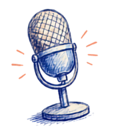
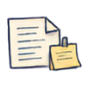

- 這頁教什麼：語音轉文字的應用場景、雲端與本機（開源 Whisper）工具選擇、錄音→轉逐字稿→AI 整理→人工校對的標準工作流，以及整理逐字稿成會議紀錄或重點摘要的 Prompt。
- 適合誰：需要把會議、演講、讀書會錄音整理成文字紀錄的醫療人員，不需要先修其他課。
- 注意：錄音前務必取得同意，含病人資料的錄音或逐字稿等同病歷等級敏感資料，上傳雲端工具前必須先去識別化，本機離線轉錄也不代表可以隨意處理病人資料。
3 秒安全檢查
有沒有病人資料？會不會給病人看？我能不能負責？— 錄音和逐字稿特別容易夾帶病人資訊，動手前先過這三關，任何一題讓你猶豫，先回 Part 3 — AI 安全與隱私。
用在哪
只要是「有人說話、需要留下文字紀錄」的場合，語音轉文字都能省下大量手動打字的時間：
晨會、跨科討論、行政會議，錄音後轉逐字稿，比邊聽邊記更完整不遺漏。

演講／研討會研討會、繼續教育課程錄音，事後轉文字方便整理重點、寫心得報告。
期刊讀書會的討論過程轉成文字，方便後續彙整成共識或教學資料。
走路、開車時把想法直接講給手機聽，回程就有一份文字草稿可以修改。本站有現成的 口述筆記小工具，打開網頁按下麥克風就能用。
工具選擇
📅 資訊更新於 2026 年 7 月 — 各工具的免費額度、支援語言以官方公告為準，使用前建議先確認最新條件。
台灣人工智慧實驗室（AILabs）開發，針對台灣國語、台語、中英夾雜的口音優化，中文辨識品質在本地工具中相對突出。即時錄音轉文字功能免費使用；上傳既有音檔另有免費額度限制。有網頁版和 App。
把錄音檔上傳到 Google AI Studio，請 Gemini 轉成繁體中文逐字稿，效果不錯且免費，但單次處理的音檔長度有限制，較長的錄音需要分段上傳。

Word／Teams 內建聽寫有 Microsoft 365 帳號的話，Word 的「口述」功能和 Teams 會議的「轉錄」功能都內建語音轉文字，開會時可以直接自動產生逐字稿，不需要額外工具。
如果來源是影片（例如手機錄的演講畫面），CapCut 的自動字幕功能本身也是一種語音轉文字，生成後可以直接複製字幕文字當逐字稿。詳見 番外 — CapCut 剪輯實戰。
本機離線轉錄（開源）— 敏感內容的出路
上面四個工具都是雲端服務，錄音會離開你的電腦。如果錄音內容較敏感（例如內部討論、不便上傳的會議），可以改用開源的本機轉錄工具 — 整個轉錄過程都在自己的電腦上完成，音檔不會傳到任何伺服器。
.exe、Mac 選 .dmg），之後就跟安裝一般軟體一樣。想進一步認識 GitHub、甚至用它免費架自己的網站，見 番外 — 用 GitHub Pages 架網站。
桌面應用程式，Windows／Mac／Linux 都有安裝檔，背後引擎是 OpenAI 開源的 Whisper 語音辨識模型。安裝後匯入音檔或影片即可離線轉逐字稿，支援輸出純文字與字幕格式。GitHub 頁面：chidiwilliams/buzz。同類工具還有介面更新穎的 Vibe，功能相近，擇一使用即可。
- 常輸出簡體字 — Whisper 辨識中文語音時經常輸出簡體，轉完把逐字稿交給 ChatGPT／Gemini 時，順手請它「轉為台灣慣用的繁體中文」即可，正好與下方 Step 3 的整理流程合併處理。
- 速度取決於電腦效能 — 沒有獨立顯示卡的筆電，轉一小時錄音可能需要等待數十分鐘。首次使用需下載辨識模型（數百 MB 至數 GB），建議先用短錄音試轉，確認速度與品質可接受再處理長檔案。
標準工作流
不管用哪個工具轉出逐字稿，後續處理流程都一樣：
手機或錄音筆全程錄下會議／演講，收音盡量靠近說話者，減少環境噪音。
用雅婷、Google AI Studio 或 Word／Teams 把錄音轉成文字，先不追求完美，能讀懂大意即可。
把逐字稿貼給 ChatGPT／Gemini／Claude，請它整理成會議紀錄或重點摘要（見下方 Prompt）。這一步的技巧可以參考 Part 2 — AI 文字應用。
逐句核對 AI 整理後的內容，尤其是專有名詞、數字、人名，確認沒有辨識錯誤或 AI 誤解語意。
整理逐字稿的 Prompt
逐字稿本身通常很口語、有贅字、東拉西扯，直接丟給 AI 加上明確指示，就能整理成可用的文件。
注意事項
- 錄下會議或演講前，先取得與會者或講者的同意，不要偷偷錄音
- 若討論內容涉及病人資料，逐字稿等同病歷等級的敏感資料，處理前務必先去識別化 — 去識別化原則詳見 Part 3 — AI 安全與隱私
- 逐字稿上傳到雲端工具（AI Studio、雅婷等）前，確認內容不含可辨識病人身分的資訊